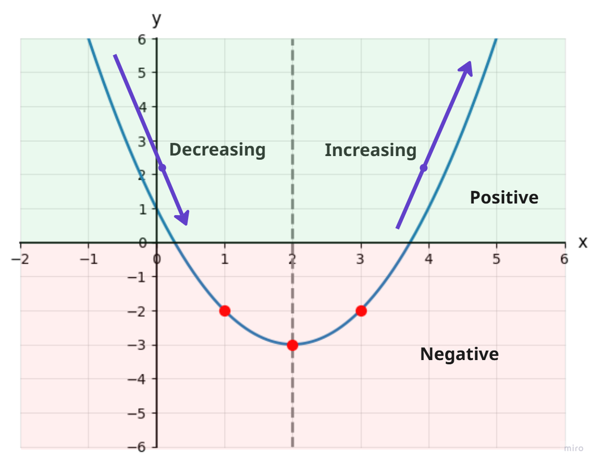

1. Find the slope and y-intercept of y = 3x − 2. How do you use them to graph?
{{a}}m = 3, b = −2. Plot (0, −2), then go up 3 and right 1.
{{/a}}2. A line has m = {{f 1/2}} and passes through (4, 1). What is b?
{{a}}1 = {{f 1/2}}(4) + b = 2 + b, so b = −1
{{/a}}3. Find the vertex of y = 2x2 + 4x − 1 if its axis of symmetry is x = −1.
{{a}}f(−1) = 2 − 4 − 1 = −3, so the vertex is (−1, −3).
{{/a}}| x | 0 | 1 | 2 | 3 | 4 |
|---|---|---|---|---|---|
| f(x) | {{a}}1{{/a}} | {{a}}−2{{/a}} | {{a}}−3{{/a}} | {{a}}−2{{/a}} | {{a}}1{{/a}} |
Pick x = 3: f(3) = {{a}}−2{{/a}}, so the point is (3, {{a}}−2{{/a}}).
Mirror image: ( {{a}}1{{/a}} , {{a}}−2{{/a}} )
{{grid}}
Before the vertex, the graph goes down. It is decreasing on (−∞, 2). After the vertex, it goes up. It is increasing on (2, ∞).
It is negative between the x-intercepts and positive outside them.
Vertex (1, 4). Axis x = 1. Opens upward.
Extra point: {{a}}(2, 7){{/a}} Mirror: {{a}}(0, 7){{/a}}
{{grid}}f(x) = a(x − h)2 + k
Vertex: (h, k). Axis of symmetry: x = h.
Opens upward if a > 0. Opens downward if a < 0.
Vertex {{a}}(3, −4){{/a}} Axis {{a}}x = 3{{/a}} Opens {{a}}up{{/a}}
Pick x = 4: ( 4 , {{a}}−2{{/a}} ) Mirror: ( {{a}}2{{/a}} , {{a}}−2{{/a}} )
{{grid}}Vertex {{a}}(−2, −1){{/a}} Axis {{a}}x = −2{{/a}} Opens {{a}}down{{/a}}
Pick x = 1: ( 1 , {{a}}−4{{/a}} ) Mirror: ( {{a}}−5{{/a}} , {{a}}−4{{/a}} )
{{grid}}Vertex {{a}}(−1, 3){{/a}} Axis {{a}}x = −1{{/a}} Opens {{a}}up{{/a}}
Pick x = −3: ( −3 , {{a}}7{{/a}} ) Mirror: ( {{a}}1{{/a}} , {{a}}7{{/a}} )
{{grid}}a = {{a}}−3{{/a}} b = {{a}}12{{/a}}
{{a}}x = −{{f 12/2(−3)}} = 2 Axis: x = 2
{{/a}}a = 2, b = 4
x = −{{f 4/2(2)}} = −1 Axis: x = −1
{{/a}}Axis: x = {{a}}3{{/a}} Vertex: {{a}}(3, 1){{/a}}
f(3) = {{a}}9 − 18 + 10 = 1{{/a}}
Axis: x = −{{f 8/2(2)}} = −2
f(−2) = 8 − 16 − 5 = −13
Vertex: (−2, −13)
{{/a}}1. f(x) = x2 − 4x + 1 has axis of symmetry x = 2. The point (3, −2) has a mirror image at ( {{a}}1{{/a}} , −2).
2. This function is {{a}}decreasing{{/a}} before its vertex and {{a}}increasing{{/a}} after it.
3. Between its two x-intercepts, this function is {{a}}negative{{/a}}.
4. In f(x) = 2(x + 3)2 − 2, the vertex is ( {{a}}−3{{/a}} , −2).
5. In standard form f(x) = ax2 + bx + c, the axis of symmetry is x = {{a}}−{{f b/2a}}{{/a}}.
| x | −4 | −3 | −2 | −1 | 0 | 1 | 2 |
|---|---|---|---|---|---|---|---|
| y | {{a}}5{{/a}} | {{a}}0{{/a}} | {{a}}−3{{/a}} | {{a}}−4{{/a}} | {{a}}−3{{/a}} | {{a}}0{{/a}} | {{a}}5{{/a}} |
2. f(x) = (x − 1)2 − 2 (extra point at x = 3)
{{grid}}Inc {{a}}x > 1{{/a}} Dec {{a}}x < 1{{/a}}
Pos {{a}}outside 1 ± √2{{/a}} Neg {{a}}between 1 ± √2{{/a}}
3. g(x) = −(x + 3)2 + 4 (extra point at x = −5)
{{grid}}Inc {{a}}x < −3{{/a}} Dec {{a}}x > −3{{/a}}
Pos {{a}}−5 < x < −1{{/a}} Neg {{a}}x < −5 or x > −1{{/a}}
4. f(x) = 2(x − 2)2 + 1 (extra point at x = 4)
{{grid}}Inc {{a}}x > 2{{/a}} Dec {{a}}x < 2{{/a}}
Pos {{a}}all x{{/a}} Neg {{a}}never{{/a}}
5. f(x) = −{{f 1/2}}(x + 1)2 + 3 (extra point at x = −3)
{{grid}}Inc {{a}}x < −1{{/a}} Dec {{a}}x > −1{{/a}}
Pos {{a}}between −1 ± √6{{/a}} Neg {{a}}outside −1 ± √6{{/a}}
6. f(x) = −{{f 1/4}}x2 + 4 (extra point at x = −4)
{{grid}}Inc {{a}}x < 0{{/a}} Dec {{a}}x > 0{{/a}}
Pos {{a}}−4 < x < 4{{/a}} Neg {{a}}x < −4 or x > 4{{/a}}
7. f(x) = x2 − 6x + 4 (extra point at x = 6)
Axis {{a}}x = 3{{/a}} Vertex {{a}}(3, −5){{/a}}
{{grid}}8. f(x) = {{f 1/2}}x2 + 2x − 2 (extra point at x = 2)
Axis {{a}}x = −2{{/a}} Vertex {{a}}(−2, −4){{/a}}
{{grid}}9. f(x) = −3x2 + 30x − 69 (extra point at x = 3)
Axis {{a}}x = 5{{/a}} Vertex {{a}}(5, 6){{/a}}
{{grid}}10. f(x) = x2 − 8x + 12 (extra point at x = 1)
Axis {{a}}x = 4{{/a}} Vertex {{a}}(4, −4){{/a}}
{{grid}}11. f(x) = 0.5x2 − 3.0x − 7.0 (extra point at x = −7)
Axis {{a}}x = 3{{/a}} Vertex {{a}}(3, −11.5){{/a}}
{{grid}}12. f(x) = {{f 1/4}}x2 + {{f 1/2}}x − {{f 7/4}} (extra point at x = −7)
Axis {{a}}x = −1{{/a}} Vertex {{a}}(−1, −2){{/a}}
{{grid}}The minimum value is k, reached at x = h.
So it is always positive exactly when a > 0 and k > 0.
{{/a}}Dashed line y = x + 4, shaded below; solid parabola with vertex (2, 1) opening downward, shaded above.
The solution is the sliver that is inside the parabola and under the line.
{{/a}}